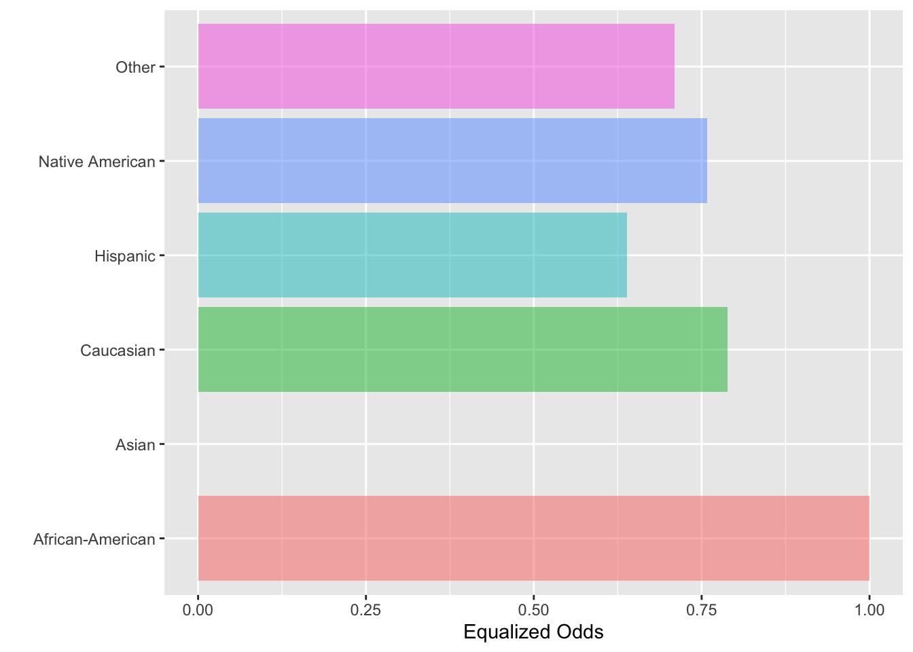
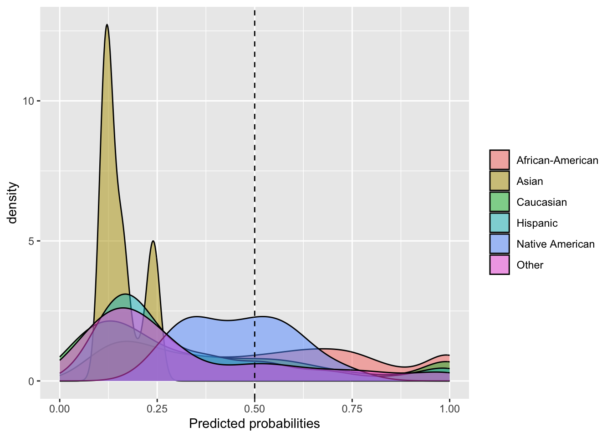

3Part II: Discovering/Mitigating Bias in Machine Learning
In modern applications of machine learning as a predictive modeling tool, it would be irresponsible to produce a model that biases one sensitive group over another. As such, it becomes imperative to find methods of uncovering and reducing any such biases.
3.1 Goals
There are two main aspects of fair machine learning:
Measuring unfairness: A number of measures have been proposed.
Reducing unfairness: For a given ML algorithm, how can we ameliorate its unfairness, yet still maintain an acceptable utility (predictive power) level?
In our earlier COMPAS example: Is the risk assessment tool biased against African-Americans? And if so, how can we reduce that bias while still maintaining good predictive ability?
3.2 Comparison to Part I
First, recall our notation:
As before with C, think of X as, at first, consisting of all variables other than Y and S, but then selecting some of X as O, with X then being all variables but Y, S and O.
Y: outcome variable, to be predicted
S: sensitive variable
O: proxy variables
X: other variables to be used to predict Y
We wish to predict Y from X and O, omitting S, but with concern that we may be indirectly using S via O. Contrast this from our material in Part I:
In Part I, we fit models for predicting Y, but with the goal of using such models to assess the effect of S on Y; we were not interested in actually predicting Y. We included S in our models, but wished to find variables C that were correlated with both Y and S, so as to avoid distorting our look at the impact of S on Y. Any X variable unrelated to Y was not of interest.
Here in Part II, prediction of Y is our central goal, rather than effect assessment. We will omit S, relying our prediction fully on X and partly on O. The variables O are related to S; the stronger the relation of an O variable to S, the less weight we will put on that variable in predicting Y.
We will describe some common measures of unfairness shortly. But first, how do we choose the O variables?
3.2.1 Deciding proxies
As with choosing confounders in Part I, the analyst may simply choose all possible candidate O variables.
the proxies based on his/her domain expertise. But a more formal approach may involve correlation. The function dsldOHunting calculates the correlations between S and
It should be kept in mind that, as with any statistic, all utility and fairness measures are subject to sampling variation.
Here’s an example, using the COMPAS data:
library(dsld)
Loading required package: fairml
Loading required package: regtools
Loading required package: FNN
*********************
Latest version of regtools at GitHub.com/matloff
Type ?regtools to see function list by category
Loading required package: qeML
Loading required package: rmarkdown
Loading required package: tufte
*********************
Navigating qeML:
Type vignette("Quick_Start") for a quick overview!
Type vignette("Function_List") for a categorized function list
Type vignette("ML_Overview") for an introduction to machine learning
Attaching package: 'qeML'
The following object is masked _by_ '.GlobalEnv':
evalr
Registered S3 method overwritten by 'GGally':
method from
+.gg ggplot2
data(compas1) cmp <- compas1[,-3] # omit decile; we are developing our own risk tooldsldOHunting(cmp,'two_year_recid','race')
The output here suggests possibly using, say, the age and priors_count variables as proxies.
The function does not use the classic Pearson product moment correlation here, opting instead for Kendall’s tau correlation. Both are widely-used, and both take on values in [-1,], but while Pearson is geared toward continuous numeric variables, Kendall is also usable for binary or ordinal integer-valued variables.
Tau is defined in terms of concordances and discordances. Say we look at height and weight, and compare two people. If one of the people is both taller and heavier than the other, that is a concordance. If on the other hand, one is shorter but heavier than the other, that is a discordance. We consider all possible pairs of people in our dataset, then sets tau to the difference in concordance and discordance counts, divided by the number of pairs.
3.3 Measuring utility
Utility in ML classification algorithms in general, and both utility and fairness in the fair ML classification realm, often (but far from always) make use of quantitaties like False Positive Rate (FPR). So, let’s start by defining these rates.
The famous rates FPR etc.
These are conditional probabilities, but it’s important not to confuse the event with the condition.
Consider binary Y classification problems, where we label Y is either positive (e.g. patient has the disease) or negative (e.g. patient does not have the disease).
After we fit our ML tool to predict Y, we use it for prediction. Consider a long period of time in which we do such predictions. During that time, define the following counts:
FP: Count of the number of times we predict Y to be positive and actually it’s negative.
FN: Count of the number of times we predict Y to be negative and actually it’s positive.
TP: Count of the number of times we predict Y to be positive and actually it’s positive.
TN: Count of the number of times we predict Y to be negative and actually it’s negative.
Then some key rates are:
FPR: FP / (FP + TN) = P(guess Y positive | Y actually is negative)
TPR: TP / (TP + FN) = P(guess Y positive | Y actually is positive)
FNR: FN / (TP + FN) = P(guess Y negative | Y actually is positive)
TNR: TN / (FP + TN) = P(guess Y negative | Y actuually is negative)
So for instance, FPR is the proportion of time we guess positive, among those times in which Y is actually negative. Two other common terms:
recall: same as TPR
sensitivity: same as TPR
precision: P(Y is actually positive | we guess Y is positive)= (TP + FN) / (TP + FP)
It is standard to guess Y = 1 if the probability of that event is at least 0.5. But other thresholds can be used, with TPR and FPR varying as we vary the threshold. The ROC curve is the resulting graph of TPR vs. FPR; see qeROC in the qeML package.
A simple but quite common measure of utility in binary classification problems is the overall misclassification probability of misclassification; qeML predictive functions report this in the testAcc component of the functions’ return object. There are many, many other measures.
The F1-score has recently been especially popular in the ML research world. It is defined as the harmonic mean of precision and recall, and is thought to be especially useful in applications in which one class or the other is very rare.
For whatever reason, ML research has tended to focus on that binary Y case, and there are no analogous acronyms for numeric Y. Accuracy of the latter is handled simply as Mean Squared Prediction Error (MSPE), the average squared difference between predicted and actual Y value, or Mean Absolute Prediction Error (MAPE).
3.4 Measuring unfairness
Many unfairness criteria have been proposed. We preseent a few of them in this section. It should be kept in mind that, just as there is no single ML algorithm that predicts the best in all applications, one’s choice of fairness measure also will depend on the given application.
See the Xiang and Raji for an excellent analysis of the legal implications of various fairness measures.
3.4.1 S-Correlation
A direct way to measure where Y and S are still related in spite of physically omitting the latter is to compute the correlation between predicted Y, to be denoted \(\hat{Y}\) and S. As noted earlier, we use Kendall’s Tau correlation here.
For instance, let’s consider our mortgage example, say with k-Nearest Neighbors as our ML prediction tool:
Here and below, to keep things simple, we will not use a holdout set.
library(dsld)library(qeML)z <-qeKNN(cmp,'two_year_recid',holdout=NULL,yesYVal='Yes') # look at the fitted model's probability of recidivism,# i.e. regression estimatesprobs <- z$regests# the variable 'race' is an R factor, need a numericblack <-ifelse(cmp$race=='African-American',1,0)cor(black,probs,method='kendall')
[1] 0.2343988
That’s a pretty substantial correlation, definitely a cause for concern that our ML analysis here is unfair. Of course, it’s not the algorithm itself’s fault, but we must find a way to mitigate the problem.
An advantage of the S-Correlation measure is that it can also be used in non-classification problems, say predicting wage income, and take age as our sensitive variable S:
Prediction of income might be of interest in, say, a marketing context. Actually, the field of marketing has been the subject of much concern in fair ML; e.g. see FWA.
So, again, our ML tool seems to be biased, this time in terms of age.
3.4.2 Demographic Parity
The criterion for demographic parity is that the same proportion of each sub-group within the sensitive feature is classified at equal rates for each of the possible outcomes
For example, let’s consider the COMPAS dataset again. Demographic Parity would require
z <-qeKNN(cmp,'two_year_recid',holdout=NULL,yesYVal='Yes')# determine which rows were for Black applicants, which notBlackRows <-which(cmp$race =='African-American')NonblackRows <-setdiff(1:nrow(cmp),BlackRows) # all the others# regests, the output of qeKNN, is the vector of fitted probabilities# (recall that for the Y = 0,1 case, the mean reduces to the probability# of a 1)BlackProbs <- z$regests[BlackRows]NonblackProbs <- z$regests[NonblackRows]# if a probability is > 0.5, we will guess Y = 1, otherwise guess Y = 0;# conveniently, that's same as rounding to the nearest integerBlackYhats <-round(BlackProbs)NonblackYhats <-round(NonblackProbs)# again, recall that the mean of a bunch of 0s and 1s is the proportion# of 1s, i.e. the probability of a 1mean(BlackYhats)
[1] 0.5073104
mean(NonblackYhats)
[1] 0.2724777
That’s quite a difference! Overall, our ML model predicts about 51% of Black defendants to recidivate,j versus than 27% for non-Blacks.
However, such a criterion is generally considered too coarse, since it doesn’t account for possible differences in qualifications between the two groups. In other words, one must take confounders into account, as we did in Part I.
3.4.3 Equalized Odds
This criterion takes a retrospective view, asking in the case of COMPAS:
Among those who recidivate, what proportion of them had been predicted to do so? And, does that proportion vary by race?
If the answer to that second question is No, we say our prediction tool satisfies the Equalized Odds criterion.
So, Equalized Odds requires the quantity
TP / (TP+FN)
to be the same for each sensitive group.
3.4.4 The fairness package
This package calculates and graphically displays a wide variety of fairness criteria. For instance, let’s use it to evaluate the Equalized Odds criterion in the above COMPAS example.
library(fairness)
Attaching package: 'fairness'
The following object is masked from 'package:fairml':
compas
$Metric
African-American Asian Caucasian Hispanic Native American
Sensitivity 0.7536694 0 0.5943627 0.4810811 0.5714286
Equalized odds 1.0000000 0 0.7886253 0.6383184 0.7581952
Group size 2941.0000000 28 2055.0000000 501.0000000 14.0000000
Other
Sensitivity 0.5344828
Equalized odds 0.7091740
Group size 316.0000000
$Metric_plot

$Probability_plot

Taking African-Americans as the base, we see that the Equalized Odds criterion was not met, even approximately. Nor was Demographic Parity.
3.5 Remedies
Having established that ML prediction models can be biased against certain sensitive groups, what remedies are available? The dsld package includes a few of these, presented in this section. Of course, all of them recognize a basic principle:
The Fairness-Utility Tradefoff
Of course, nothing comes for free: the inherent tradeoff of increasing fairness is reduced utility (reduced predictive power over the dataset). Thus, a means of balancing this tradeoff between fairness and utility becomes essential in any future implementations of machine learning.
Any algorithm for ameliorating unfairness will thus include one or more parameters that one can use to achieve a desired level of compromise between fairness and utility. The parameters essentially allow us to “dial” the weight that our proxies will play in predicting Y; lighter weight means more fairness but poorer utility, and vice versa.
Our context will be:
Due to legal requirements or simply a desire for fairness, we will omit S from all analyses, other than for fairness assessment of our derived prediction tool.
But we are concerned about the impact of proxies, and have chosen a set of variables O to play this role.
We have chosen fairness and utility measures with which we will choose a desired point in the Fairness-Utility Tradefoff.
Many, many fair ML algorithms have been proposed, most of which are technically complex. The ones we present here have been chosen (a) for their technical simplicity and (b) availability as R packages. We will begin with the simplest algorithms (which have been developed by one of the authors of this book).
Let’s take as a running example the COMPAS data, predicting recidivism, with age and prior convictions count as proxies. To illustrate prediction, we will predict the first case in the dataset:
newx <- cmp[1,-(7:8)] # just X and O, not Y and S
3.6dsldQeFairRF
This function fits an RF model, but with deweighting of the proxies.
z <-dsldQeFairRF(cmp,'two_year_recid','race',list(age=0.2,priors_count=0.1),yesYVal='Yes')
Warning: Split select weights used. Variable importance measures are only comparable for variables with equal weights.
z$corrs
African-American Asian Caucasian Hispanic
0.21366424 0.15610522 0.16840232 0.20264208
Native American Other
0.01015095 0.14011174
predict(z,newx)
$predClasses
[1] "No"
$probs
No Yes
[1,] 0.6555973 0.3444027
Recall that in RFs, each tree will use a different random ordering of the X and O variables. At any given node in a tree, a variable is chosen at random to set up a possible split point. But here we are specifying that the age and priors count variables be used only 20% and 10% as often as other variables, in order to reduce their impact.
Yet the S-Correlation valuea are still substantial. We need to give the O variables even smaller weights or possibly include additional variables in our O set.
3.7dsldQeFairKNN
Remember, the common theme here is reducing the role played in prediction by the proxies O. How might this be done with k-NN?
An easy answer is to weight the distance metric. Ordinarily, if we move 3.2 meters to the right and then 1.1 meters forward, the distance between our new point and our original one is
\(\sqrt{3.2^2+1.1^2} = 3.38\)
That puts equal weight in the left-right direction and the forward-back direction, which makes sense for geometric distance. But in data prediction, we can use different weights. In prediction wage income in the Census data, say, we can place large weight on age and occupation, and less weight on education. The above call would change to:
z <-dsldQeFairKNN(cmp,'two_year_recid','race',list(age=0.2,priors_count=0.1),yesYVal='Yes')z$corrspredict(z,newx)
3.8 Remedies based on “shrunken” linear models
One of the most striking advances in modern statistics was the discovery that classical estimators tend to be “too big,” and that one may improve accuracy by “shrinking” them. Here is the intuition:
Consider the example in Section 2.7. The vector of estimated regression coefficients was
(12.46,-0.94,0.39,0.16,…)
We might (crudely) shrink this vector by multiplying by a factor of, say, 0.5, yielding
(6.23,-0.47,0.20,0.08,…)
The actual shrinkage mechanisms used in the regression context are much more complex than simply multiplying every component of the vector by the same constant, but this is the basic principle.
Why might this odd action be helpful? Shrinking introduces a bias, but reduces variance (roughly speaking, smaller variables vary less). If outliers (extreme values, not errors) are common in the data, these result in large estimator variance, possibly so much that shrinkage’s reduction in variance overwhelms our increase in bias.
Some readers may have heard of ridge regression and the LASSO, both of which impose shrinkage. For our fair ML context, though we wish to perform our shrinkage focusing on only some of the estimated regression coefficients, specifically those corresponding to our proxies. To be sure, it should be noted that non-proxy coefficients are affected too, but the main effects will be on the proxies.
Note that these estimators also have the potential ancillary benefit obtained from shrinkage in general, i.e. better utility.
3.8.1 The dsldFgrrm function
This is a wrapper to a corresponding function in the fairml package, based on a paper by the authors of the package.
The unfairness argument is a number in (0,1]. The smaller the value, the fairer the fit. The first value, 0.1, gave an estimate coefficient for Caucasian of -0.73, while using 0.01 reduced this to -0.15. (Note that the base for the dummy variables is apparently African-American.] But both values are small relative some of the other coefficients.